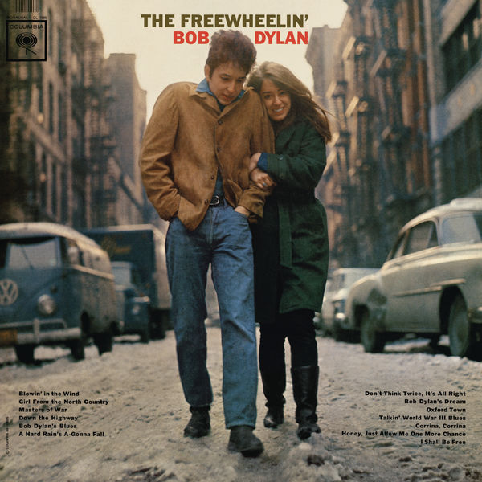

Day 17

Bob Dylan - A Hard Rain's A-Gonna Fall - The Freewheelin' Bob Dylan - 1963
挺伤心的一首歌。
Oh, where have you been, my blue-eyed son?
Oh, where have you been, my darling young one?
I've stumbled on the side of twelve misty mountains
I've walked and I've crawled on six crooked highways
I've stepped in the middle of seven sad forests
I've been out in front of a dozen dead oceans
I've been ten thousand miles in the mouth of a graveyard
And it's a hard, and it's a hard, it's a hard, and it's a hard
And it's a hard rain's a-gonna fall
Oh, what did you see, my blue-eyed son?
Oh, what did you see, my darling young one?
I saw a newborn baby with wild wolves all around it
I saw a highway of diamonds with nobody on it
I saw a black branch with blood that kept drippin'
I saw a room full of men with their hammers a-bleedin'
I saw a white ladder all covered with water
I saw ten thousand talkers whose tongues were all broken
I saw guns and sharp swords in the hands of young children
And it's a hard, and it's a hard, it's a hard, it's a hard
And it's a hard rain's a-gonna fall
And what did you hear, my blue-eyed son?
And what did you hear, my darling young one?
I heard the sound of a thunder, it roared out a warnin'
Heard the roar of a wave that could drown the whole world
Heard one person starve, I heard many people laughin'
Heard the song of a poet who died in the gutter
Heard the sound of a clown who cried in the alley
And it's a hard, and it's a hard, it's a hard, it's a hard
And it's a hard rain's a-gonna fall
Oh, who did you meet, my blue-eyed son?
Who did you meet, my darling young one?
I met a young child beside a dead pony
I met a white man who walked a black dog
I met a young woman whose body was burning
I met a young girl, she gave me a rainbow
I met one man who was wounded in love
I met another man who was wounded with hatred
And it's a hard, it's a hard, it's a hard, it's a hard
It's a hard rain's a-gonna fall
Oh, what'll you do now, my blue-eyed son?
Oh, what'll you do now, my darling young one?
I'm a-goin' back out 'fore the rain starts a-fallin'
I'll walk to the depths of the deepest black forest
Where the people are many and their hands are all empty
Where the pellets of poison are flooding their waters
Where the home in the valley meets the damp dirty prison
Where the executioner's face is always well-hidden
Where hunger is ugly, where souls are forgotten
Where black is the color, where none is the number
And I'll tell it and think it and speak it and breathe it
And reflect it from the mountain so all souls can see it
Then I'll stand on the ocean until I start sinkin'
But I'll know my song well before I start singin'
And it's a hard, it's a hard, it's a hard, it's a hard
It's a hard rain's a-gonna fall